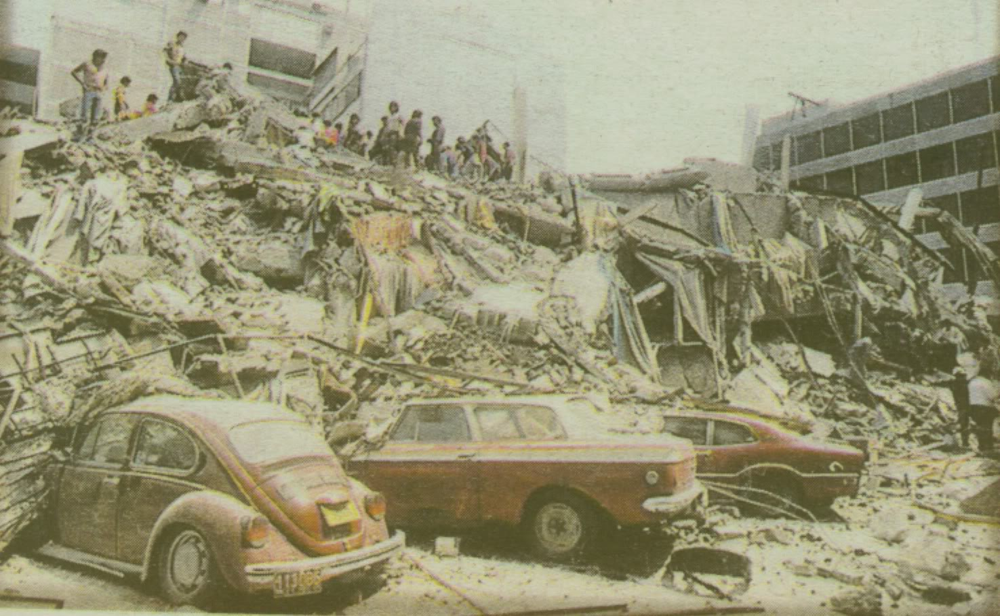
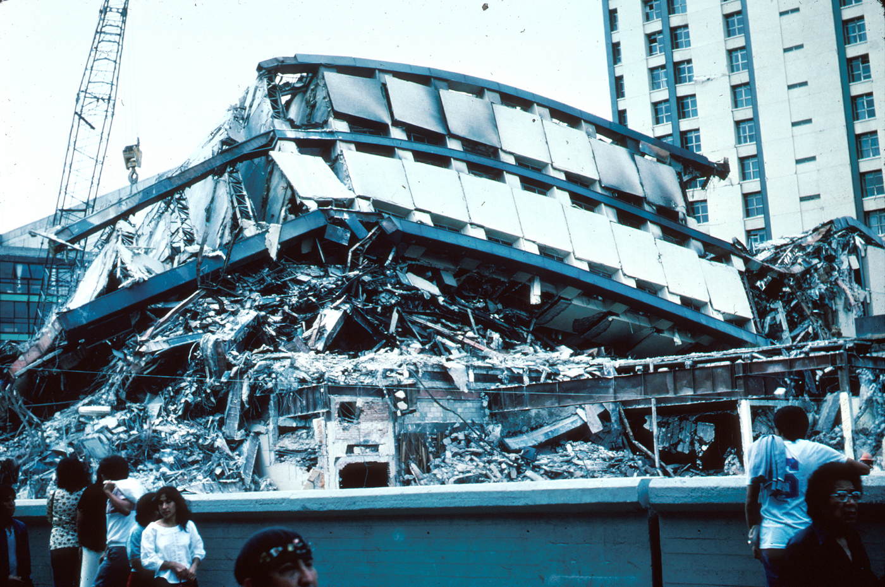
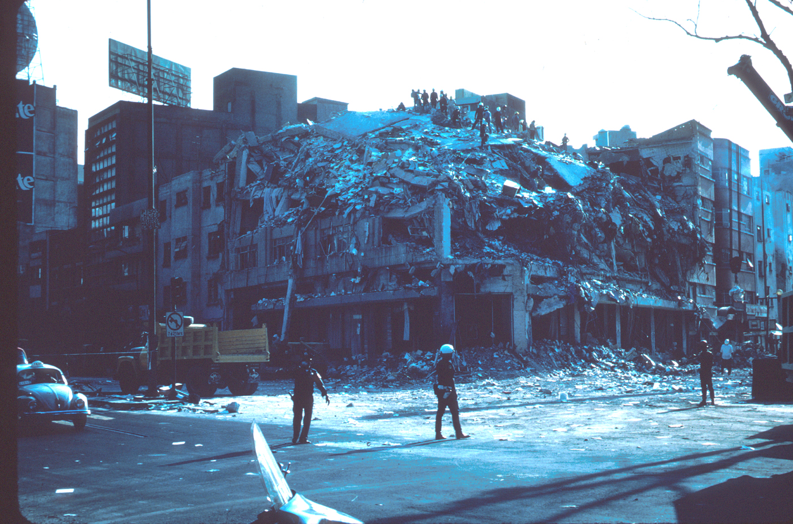
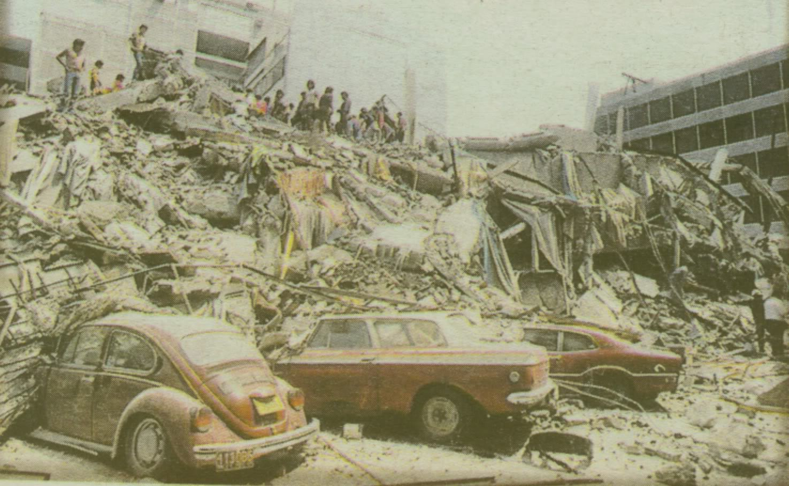
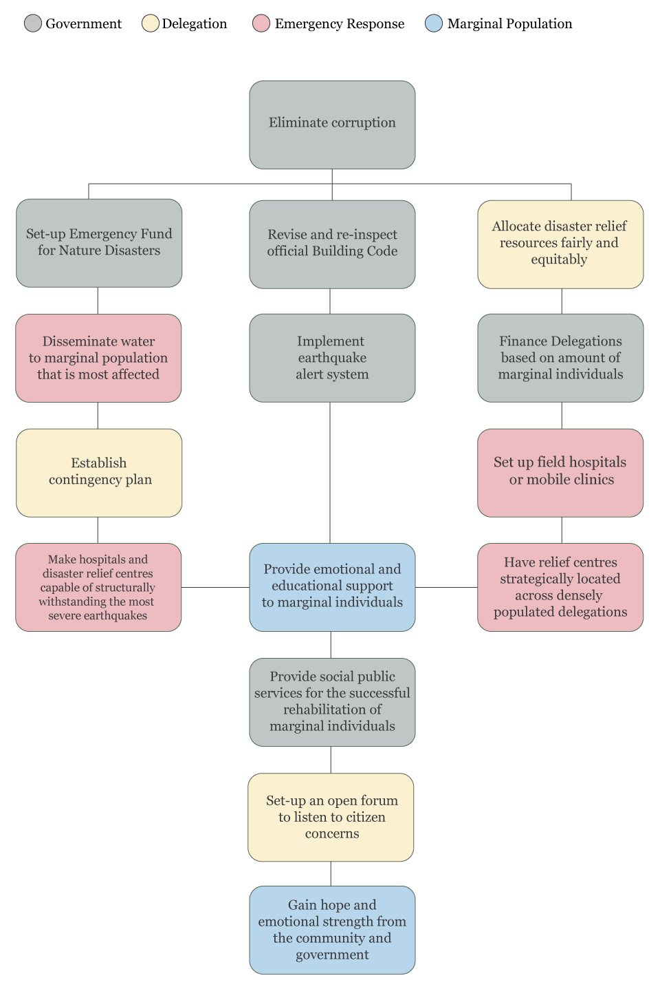

The Proof
Following are images taken after the 1985 earthquake. Most of these buildings were housed by marginalized communities before the disaster.
Hotel Regis
Pino Suarez Subway Station
The Juarez Multi-family Dwelling Complex

In the early hours of September 19th 1985, a violent earthquake of magnitude 8.1 shook Mexico City awake in a frantic panic. According to Zeballos, "in terms of intensity, this earthquake is considered to have been the strongest of the century" (Zeballos, 141). In a metropolitan city where its population currently exceeds 18,400,000 inhabitants (Zeballos, 141), it is of no surprise that marginal individuals suffer the toughest of hardships when a weather-related disaster occurs.
In the 1985 earthquake, the most severely affected areas were produced in the Cuauhtemoc Delegation, located in the central region of the Distrito Federal. According to Zeballos, "Damage caused was great... in terms of the loss of multifamily dwelling, government offices, and damage to the infrastructure of basic services" (Zeballos, 141). Three public hospitals were evacuated and one lost its structural capacity altogether. A total of 5,321 beds were suddenly unavailable seconds after the earthquake struck, affecting marginal individuals the most.
Perhaps the most difficult aspect of being a marginal individual living in Mexico City is the response time of the Emergency Response Team. In 1985, due to the fact that marginal areas were densely populated, Response Teams were not able to arrive in time, costing many lives (Zeballos, 146).
Due to the power relations present within Mexico, marginal populations continue to be the demographic that strongly require the assistance of public services on any given day. When a weather-related disaster happens, such as an earthquake, the latter triggers an uneven balance of support for marginal individuals throughout the city.
According to Anderson, "the disorganized response to the earthquake and generalized corruption in public works programs... fell squarely within the realm of human agony" (Anderson, 146). Marginal populations have truly struggled in Mexico. The lack of emergency preparedness and strong social inequalities have proven citizens to be frustrated with the leadership of the country (Anderson, 148).
Emotional support is often times the only thing one seeks after a weather-related disaster happens. In the case of the 1985 earthquake, disaster victims felt further alienated "when the government began calling for a return to normalcy only four days after the disaster (Anderson, 156). This proves a strong social inequality between the wealthy and the marginalized population, stemming from the government as it point of origin.
Even though earthquakes have just begun to be considered a weather-related disaster due to global warming (Griffin, p.3), marginal individuals have been identified to exhibit a large unmet need for social equality. At times, disasters can trigger a society to reinvent itself for the better. With the right stakeholder matrix, we can start to analyze where the fundamental problem lies.
Following are images taken after the 1985 earthquake. Most of these buildings were housed by marginalized communities before the disaster.

A stakeholder matrix is capable of revealing a hierarchical model of human needs.
With an estimated amount of 10,000 people dead (Zeballos, 147), the 1985 earthquake is a model for the lack of humanistic design systems present within weather-related disasters. Due to the fact human factors are integral to innovation, we must investigate the needs of society, the government taking action, as well as the motivations that drive a society forward in the most tragic days.
Having pinpointed a problem regarding social inequality amidst weather-related disasters, we can now begin to research, explore, design and implement a system where humanity and prosperity are regarded as the main tenants of societal progress.
Anderson, Mark D. Disaster Writing: The Cultural Politics of Catastrophe in Latin America. Charlottesville: University of Virginia, 2011. Print.
Griffins, Peter. "Can the Weather Cause Earthquakes?" Sciblogs. Science Media Centre., 15 Sept. 2012. Web. 20 Sept. 2012. http://sciblogs.co.nz/griffins-gadgets/2010/09/15/can-the-weather-cause-earthquakes/.
Zeballos, Jose Luis. "Health Aspects of the Mexico Earthquake – 19th September 1985." Disasters 10.2 (1986): 141-49. http://onlinelibrary.wiley.com/doi/10.1111/j.1467-7717.1986.tb00579.x/abstract. Overseas Development Institute, 18 Dec. 2007. Web. 20 Sept. 2012.